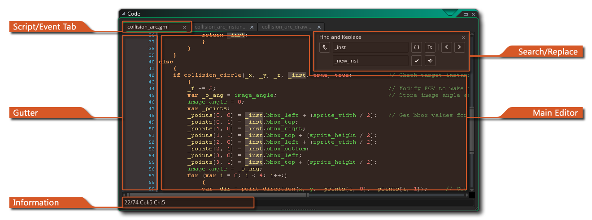
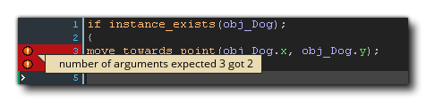
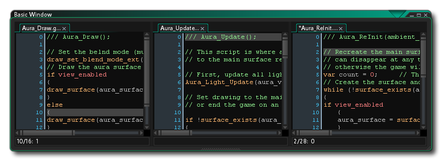

你可以在 GameMaker Studio 2 中的许多地方使用代码，从物体到房间，再到实例，还有许多内置函数可以让你在使用 GML 或进行拖放编程时更轻松。但是，通常需要创建自己的函数来执行特定任务，或者将大部分代码压缩到更易于管理的块中，或者甚至能够在许多不同的位置重用特定的代码块， 这就是 GameMaker Studio 2 为你提供创建 脚本 的能力的原因。
注意： 此页面引用了用于编写脚本的 GML，但你也可以使用拖拽创建脚本（请参阅 此处）。无论你使用什么来编写项目代码，此页面上的信息仍然对编辑器本身有效。
脚本使用脚本语言 GML 编写（有关详细信息，请参阅 GML 概述 部分），这是 GameMaker Studio 2 使用的内置编程语言。一旦你对 GameMaker Studio 2 更加熟悉并希望最大程度地使用它，建议你开始学习使用这种语言，因为它可以极大地扩展你创建游戏时的可能性。你也可以使用拖拽编写脚本，但这需要不同的编辑器，并在 动作脚本手册一节中讨论。
脚本（与任何内置函数一样）可以使用不同的输入变量，包括实数、字符串、布尔值和特殊值（例如 all 或者 noone），并且这些输入变量通常称为 参数，尽管它们通常也称为 参数。要从物体或时间轴执行脚本，请使用脚本名称，就像它是函数一样，也可以使用 GML 函数 script_execute。你可以通过在资源树中右键单击  脚本并选择 重命名 来命名脚本，但请注意脚本名称必须符合函数的脚本规则，因此它们必须以字母开头，并且只包含字母，数字或下划线符号 “_”。
脚本并选择 重命名 来命名脚本，但请注意脚本名称必须符合函数的脚本规则，因此它们必须以字母开头，并且只包含字母，数字或下划线符号 “_”。
如上所述，你可以将许多参数传递给脚本（总共 16 个），它将使用这些参数来执行你为其编写的任务。为了让你更好的理解，让我们拿物体的一个动作来举个例子：你把动作添加到事件中，同时指定好一些相应的参数，那么你的实例就会执行你设置的动作。脚本也是如此，唯一的区别就是它们是由 你 所编写的。不仅可以将参数传递给脚本，你也可以要求脚本 返回 一个值（使用 return 关键字），因此，你可以使用它们来构建计算方法（数学方法），或者在复杂的碰撞检测或任何事情之后返回实例 id。但请注意，使用 return 会结束脚本，因此在执行之后不会执行任何代码，这意味着必须考虑脚本的结构。
首次创建资源时，将打开脚本编辑器窗口，其中包含以下选项：
脚本编辑器在一个窗口中打开，顶部有选项卡，让你在一个窗口中拥有多个脚本（尽管可以从 首选项 更改此行为，为每个脚本提供一个新窗口）。 你可以单击一个脚本，然后拖动它以重新排序选项卡，或者如果你愿意，可以将其拉出当前窗口并将其放在工作区上为该脚本创建一个新窗口（或将其添加到 一个不同的窗口），你也可以最大化脚本编辑器来创建一个新的工作区。 如果将脚本选项卡拖出 IDE 窗口，则会生成一个新 IDE 以保存此脚本资源，并且可以像使用主窗口一样使用它。
请注意，如果要在脚本编辑器中编辑 物体事件 中的代码，并且已最大化脚本编辑器或将其放在单独的窗口或工作区中，则右键单击
编辑器菜单将具有一些额外选项：
- 恢复到工作区： 这将使脚本编辑器脱离最大化 / 工作区状态，并将其重新链接到工作区中的物体。
- 转到物体： 这将带你进入具有代码的物体所在的工作区，并将焦点放在物体上。
- 添加 / 打开事件： 这允许你向当前脚本所属的物体添加新事件，并将在脚本编辑器中为添加的事件打开新的代码选项卡。如果所选事件中已包含代码，则会在新选项卡中打开该代码。
有关其余右键
行号栏用于显示代码的行号，并用于传达一些特定的信息。最重要的是，如果你犯了错误或错误地构造了代码，GameMaker Studio 2 IDE 将通过标记导致问题的代码行带有红色感叹号来通知你该问题。然后，你可以将鼠标悬停在符号上以获得问题的简要说明：
行号栏也会标记脚本中添加了断点的行。断点是你希望调试模块在到达时暂停执行游戏的脚本中的一个位置。你可以通过按 f9 或使用右键单击
最后，行号栏也会显示书签项目。要为一行代码添加书签，只需按住
/
+
+ 数字（从 0 到 9），这将允许你只需使用
在脚本编辑器中工作时，你可以按
在这里，你可以对输入的关键字执行 本地 搜索，输入搜索词后，可以使用搜索窗口右上角的箭头从脚本中的一个找到的词语跳到下一个。 你可以通过切换以下按钮来更改搜索操作的执行方式：

全词匹配： 当你切换此选项时，搜索功能将仅突出显示与整个输入字符串匹配的字符串。例如，全词匹配 关闭 时搜索 “random” 将显示包含此字符串的所有单词 - 如 irandom() 或 randomise() - 而将其切换为 打开 只会显示函数 random()。 
区分大小写： 当切换此选项时，你告诉 GameMaker Studio 2 不仅要检查搜索字符串的内容，还要检查大小写。例如，如果你有一个名为 “spr_Dog” 的精灵，并且在 关闭 此项时搜索 “dog”，那么精灵字符串将被突出显示，但是如果切换 打开 则不会，因为 “Dog” 不再被认为与 “dog” 相同。 如果你使用
将其打开。 打开后，你可以输入一个字符串，用于替换任何给定的搜索字符串，使用以下按钮执行操作：

替换下一个： 单击此按钮将使用给定的替换字符串替换脚本中找到的下一个匹配字符串。请注意，“下一个” 匹配项被视为当前光标位置之后的下一个匹配项，你可以使用搜索窗口右上角的箭头按钮跳到不同的匹配项。 替换全部： 单击此按钮将使用给定的替换字符串替换脚本中搜索字符串的 所有 示例。 请注意，如果要进行全局搜索（即：搜索整个项目而不是当前脚本），则可以按
主脚本编辑器是你编写所有代码以创建脚本或填充物体事件的地方。脚本和代码事件是按照 GML 语法的一般规则编写的（有关详细信息，请参阅 GML 概述 部分），你可以在从自动完成窗口编写脚本时获得帮助：
在编写代码时会弹出此窗口（通常在稍微暂停后，但可以在 首选项 中设置），并按字母顺序为你提供“最佳”答案选择。使用代码编辑器时，你可以单击
并拖动鼠标以选择一行代码或按住
然后单击
值得注意的是，你可以通过各种方式注释你的代码。注释代码对于保持生产力非常重要，因为它可以保持清晰，并以一种显而易见的方式分离代码部分，使每个部分的功能和原因显而易见。这也意味着，如果你在团队中工作，那么你可以为其他成员留下笔记，并且他们将确切地知道你已完成的工作或特定的代码部分。即使你是独立开发人员，为代码留下注释也很重要，特别当你会不止一次编辑它时。
注释你的代码很简单，因为你只需在文本行之前添加 “//” 即可，或者你可以使用 “/* 在这里添加文本 */” 注释掉整个段落。甚至还有两个键盘快捷键可以注释和取消注释选定的代码行：
脚本还可以添加某些 JSDoc 样式注释，以便在代码中使用它们时，它们会自动显示，并显示其参数和其他详细信息。 你可以从 JSDoc 脚本注释 部分获取更多信息。 请务必注意，脚本注释可以通过 To-Do 列表进行格式化和解析，以便该项可以添加到自动列表中（有关详细信息，请参见 此处）。
除了注释，你还可以使用特殊的 #region 标记来标记代码的 折叠代码 部分。这是如何工作的，你将 #region 标记（以及任何注释文本）添加到代码部分的顶部，然后在该部分的底部添加相应的 #endregion 标记，然后你可以“折叠”代码， 即：将其隐藏起来，这样你就可以减少编辑器中可见的代码行数：

实际代码看起来像这样：
#region This is an example region
width = sprite_get_width(sprite);
height = sprite_get_height(sprite);
xoff = sprite_get_xoffset(sprite);
yoff = sprite_get_yoffset(sprite);
#endregion Further comment here if required你可能已经注意到，脚本文本的某些部分是彩色的。脚本编辑器 “知道” 现有物体、内置变量和函数等，并相应地对它们进行颜色编码。颜色编码有助于避免错误，因为如果你拼错了一些名称或使用关键字作为变量，或者语法错误，你可以立即看到。但是，如果你不喜欢颜色编码，可以在 首选项 中打开和关闭它（你也可以使用 F10）以及自定义使用的颜色。
你也可以右键单击
除了剪切、复制和粘贴代码行的常规方法之外，你还可以选择注释或取消注释任何选定的文本、添加或删除缩进以及将代码窗口拆分为 1、2 或 3个单独的窗格 （请注意，如果你未在编辑的代码中定义任何选项，则与 #regions 相关的选项将不可用）。 这些最后的选项会将窗口拆分为不同的部分，然后你可以拖动脚本并将其与其他部分一起显示以进行比较和编辑。 
这对于比较两个脚本或同时查看连接的脚本非常有用，无需另外一个窗口或选项卡之间不断切换。此菜单中的其他选项是切换断点配合调试器一起使用，还有将 GML 代码转换为 DnD™，反之亦然。请注意，如果将代码转换为 DnD™，则 不会 为每行代码创建单独的动作，而是使用单个代码动作来保存先前在事件或脚本中的所有内容。
在编辑脚本时，你可以使用的另一个非常方便的工具是使用 代码片段。按 F4，你将打开代码片段弹出窗口，允许你选择一种常用的代码方法。如果需要，你还可以定义 自己的 代码片段，将它们保存到安装 GameMaker Studio 2 的目录：\GameMaker Studio 2\TextEditor\snippets.txt。你可以按照以下规则使用任何文本编辑器编辑此文件：
- 每个片段都在一个单独的行上（不应该有空行）。
- 每个片段都以片段名称（菜单中显示的名称）开头，后跟冒号（:），然后是实际的代码片段。
- Use # for a newline and put the text that needs to be selected first between | symbols.
请参阅文件中已有的示例，了解如何按照上述规则进行设置，强烈建议你在开始更改任何内容之前对其进行备份，并备份你对文件所做的任何编辑，更新或重新安装程序还原你所做的更改，你可以使用备份再次重做它们。
IDE底部的信息栏显示你当前的行号以及该行的位置。 它也是你可以看到代码帮助器的地方，代码帮助器是一行文本，显示你当前正在编辑的函数及其所需的参数。当你在编辑器中填写函数时，参数将突出显示以显示你当前正在编辑的那个。如果你在自定义脚本中使用了 JSDoc 脚本注释，那么你提供的信息也将显示在此处。